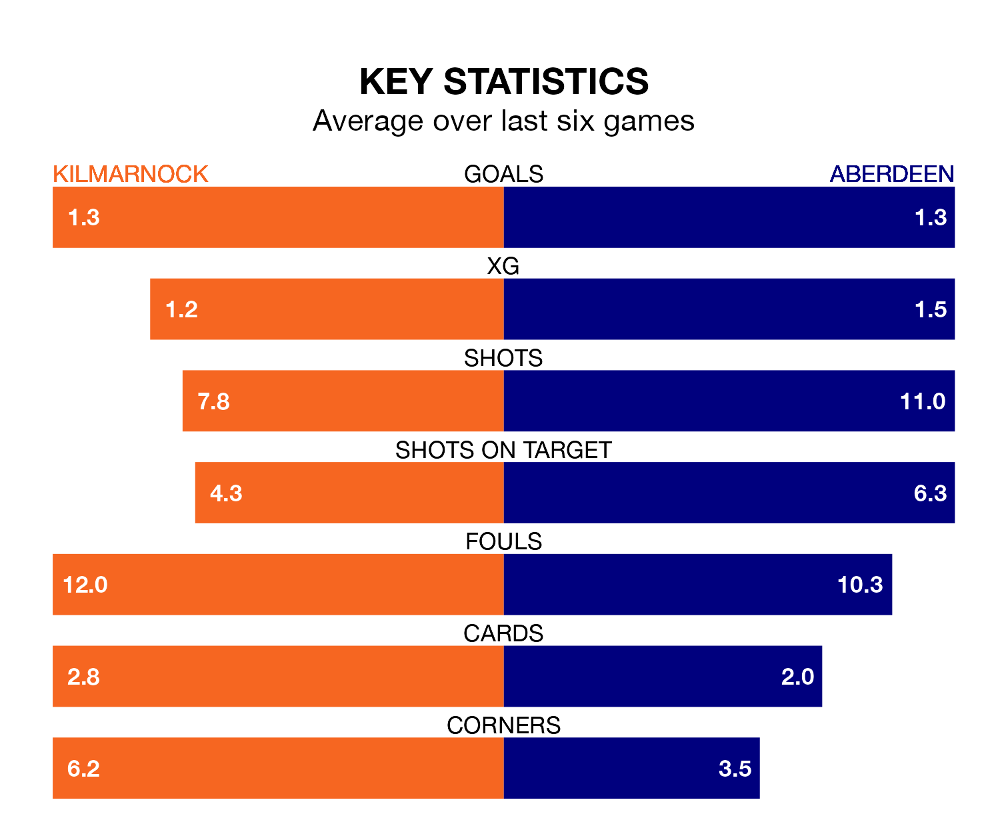

Aberdeen travel to the BBSP Stadium Rugby Park looking to secure a first win in eight Premiership games against Kilmarnock on Saturday.
Aberdeen have lost two and drawn five matches since they last earned three points – against Ross County on January 2.
They face a Kilmarnock side who have won two and drawn four over that time.
In Bojan Miovski, Aberdeen have one of the league's most on-form strikers so far this season. He has notched 13 goals in 25 appearances, to sit second in the scoring charts.
Kilmarnock's top scorers, with five goals in 24 games each, are Kyle Vassell and Marley Watkins.
In the last 10 years, Kilmarnock and Aberdeen have played each other on 31 occasions. Kilmarnock won four of them, Aberdeen 22, and they drew five times.
On average, Killies scored 0.7 goals and Aberdeen 1.9 in those matches.
Their last meeting was on December 6, when Kilmarnock won 1-0 away.
With 29 goals in 26 games so far this season, Killies are scoring at below the league average rate with 1.1 goals per game. But they are conceding fewer than average too, letting in 27 goals at a rate of 1.0 per game.
The visitors are also below average scorers, with 1.2 goals per game, compared to a league average of 1.3. They have conceded 1.6 goals per game.
The home side are fourth in the table after 26 games, of which they have won nine and drawn 10, earning 37 points.
Aberdeen are three places behind Kilmarnock in seventh, with six wins and nine draws putting them on 27 points.
Kilmarnock's last match was on February 17, a 1-1 draw against Celtic, with David Watson getting the goal for Killies.
Aberdeen drew 2-2 with Hibernian last time out, also on February 17, with Jamie McGrath and Nicky Devlin on the scoresheet.
Updated: 10:08 (UTC), 23/02/24